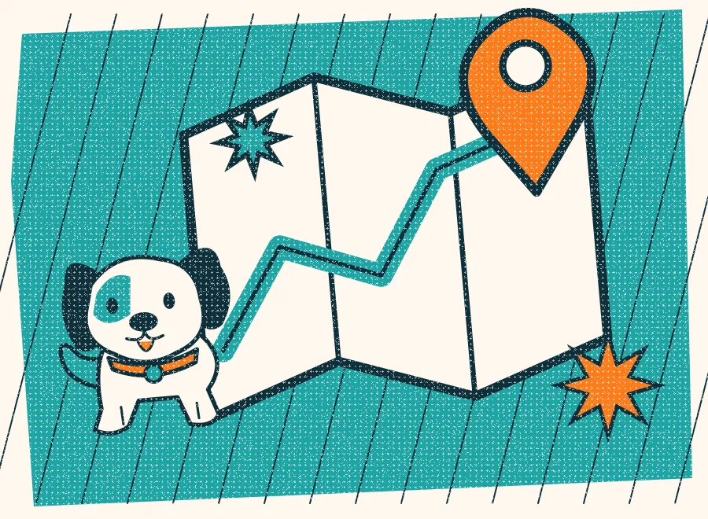
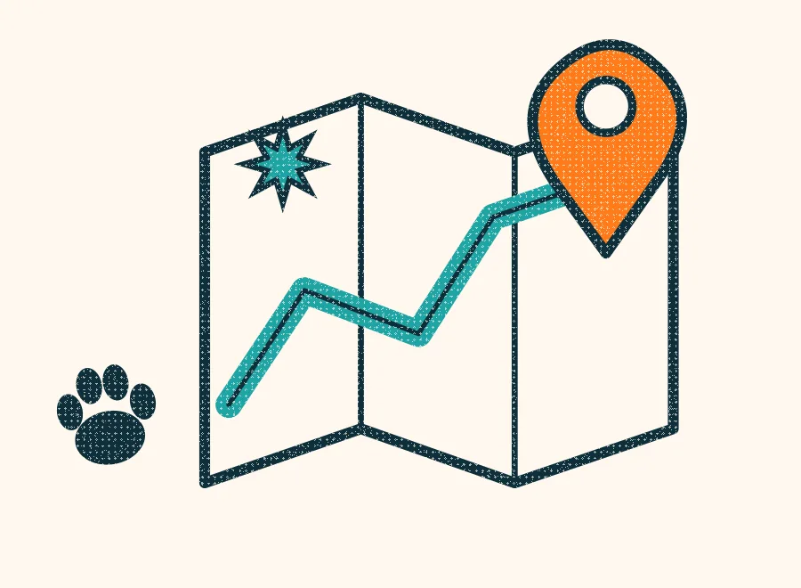

05 / WEGWEISER
IMMER
DER NASE
NACH.
Alles für einen entspannten Besuch mit deinem Hund.

So findest du uns.

Kulturhalle Pfotenwerk, Hamburg-Altona (fiktiv)
bis .
Im Messekonzept liegt die Halle in der Nähe des Bahnhofs Hamburg-Altona. Gedacht ist eine kurze Anreise zu Fuß nach der Bahn- oder Busfahrt. Plane bei der Ankunft etwas zusätzliche Zeit für deinen Hund ein und prüfe bei echten Fahrten die Beförderungsregeln des jeweiligen Verkehrsunternehmens.
Es handelt sich um einen erfundenen Veranstaltungsort. Bitte reise nicht aufgrund dieser Beschreibung an.
Häufige Fragen.
Darf ich meinen Hund mitbringen?
Ja, im fiktiven Konzept sind sozial verträgliche Hunde willkommen. Halte deinen Hund an einer kurzen Leine und achte auf ausreichend Abstand.
Muss ich einen Hund haben?
Nein. Alle Comic- und Spielefans sind eingeladen, auch Menschen ohne Hund.
Gibt es Rückzugsmöglichkeiten?
Im Konzept ist ein ruhiger Bereich mit Wasserstellen vorgesehen. Bitte nutze ihn ohne Spielzeug, laute Gespräche oder unerwünschten Hundekontakt.
Was muss ich mitbringen?
Eine Leine, Kotbeutel, Wasser, eventuell eine vertraute Decke und ausreichend Zeit für Pausen.
Sind die Workshops inklusive?
Ja, die offenen Angebote sind im fiktiven Tagespass enthalten. Plätze in der Werkstatt werden vor Ort nach Verfügbarkeit vergeben.
Ist die Messe barrierearm?
Im Entwurf sind stufenlose Zugänge, breite Wege und Sitzgelegenheiten vorgesehen. Da der Ort erfunden ist, sind diese Angaben keine überprüfte Ausstattung.
Kann ich wirklich ein Ticket kaufen?
Nein. Diese Website ist ein Studienprojekt. Das Formular simuliert nur eine Anfrage, ohne Zahlung, Versand oder Speicherung.
Impressum.
Studienprojekt der Kunstschule Wandsbek, keine echte Veranstaltung.
Pfotenpixel ist eine fiktive Comic- und Spielemesse. Namen des Teams, Kulturhalle, Programm und Preise sind für diese Aufgabe erfunden. Es gibt keinen Veranstalter, keinen Ticketverkauf und keinen Versand von Formularanfragen. Die Website verwendet keine externen Skripte oder Tracking-Dienste.
Bildnachweis.
Alle Motive und Grafiken wurden für dieses Studienprojekt mit ChatGPT (GPT-6.2) als programmatisch gezeichnete Illustrationen entwickelt. Die Grafiken wurden mit SVG, Python, CairoSVG und Pillow erstellt und in lokale Bildformate umgewandelt. Es wurden keine fremden Bilder übernommen.
- Startseite
- hero.webp, comics.webp, games.webp, pause.png, stamp.gif, stamp.png, comic.svg, game.svg, paw.svg.
- Programm
- programm.webp, workshop.webp.
- Story
- story.jpg, team.webp.
- Tickets
- tickets.webp.
- Infos
- infos.webp, map.webp.
- Fehlerseite
- lost.webp.
- Alle Seiten
- logo.svg, favicon.svg, apple-touch-icon.png, grain.png; selbst entworfene lokale Stempelschrift stempel.woff2.